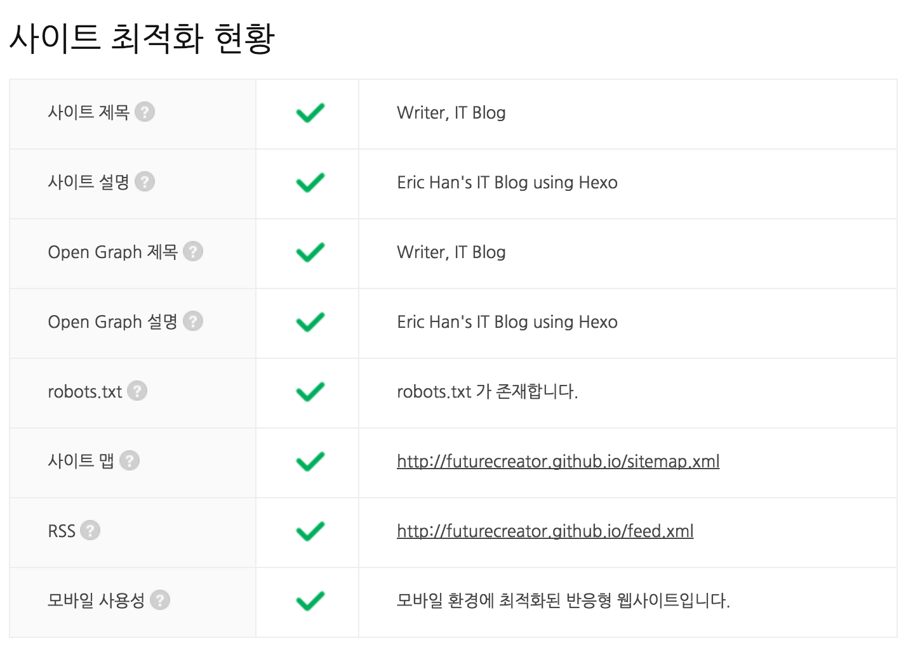

이전 포스트에서 검색과 웹 사이트 최적화에 대해 이야기를 했습니다. 구글 검색 엔진이 어떻게 동작하는지, 내 블로그가 검색이 잘 되게 하기 위해서 구글/네이버 웹 마스터 도구를 이용해서 페이지를 최적화했습니다.

- 구글(Google) 검색 원리와 검색이 잘 되게 하는 방법
- 구글(Goolge) 사이트 등록(Search Console)과 검색엔진 최적화(SEO)
- 네이버 사이트 등록(웹마스터 도구)과 검색엔진 최적화(SEO)
- 오픈 그래프 (Open Graph) 태그와 페이스북 도메인 인사이트 (Domain Insight)
이렇게 검색 엔진 최적화 (SEO; Search Engine Optimization) 를 도와주는 Hexo 플러그인들을 정리해봤습니다. 이번 포스팅에서 살펴볼 플러그인들은 다음과 같습니다.
- hexo-autonofollow
- hexo-auto-canonical
- hexo-generator-feed
- hexo-generator-seo-friendly-sitemap
hexo-autonofollow
해당 포스트에서 참고하고 있는 외부 링크에 nofollow 속성을 자동으로 추가해주는 플러그인입니다. 먼저 nofollow 속성이 무엇이고 왜 추가해야하는지 알아보겠습니다.
nofollow 속성
검색엔진에서 사용자에게 검색한 결과 페이지를 보여주기 위해 평소에 많은 웹 사이트를 수집해놓습니다. 그러한 작업을 크롤링 이라고 하고 크롤링하는 로봇을 크롤러 또는 구글의 경우 구글봇 (Googlebot) 이라고 합니다. 이 크롤러에게 이 페이지는 수집하지 말라고 알려줄 수 있습니다. 크롤러가 페이지를 수집한다는 것은 검색 결과에 노출될 수 있다는 얘기입니다. 따라서 개인정보나 유료링크 같은 것들은 수집하면 안되겠죠.
이 때 사용하는 것이 robot.txt 파일입니다. 크롤러는 홈페이지에 있는 robot.txt 파일을 참고해서 크롤링에서 예외처리할 페이지를 확인합니다. 혹은 간단하게 해당 페이지의 <head> 태그 안에 메타 태그로 표시할 수 있습니다.
1 | <meta name="robots" content="nofollow" /> |
그런데 해당 페이지 내에 있는 개별 링크에 대해서는 어떻게 처리할까요? 이런 작업은 robot.txt 로 처리하는 것이 복잡해서 rel 속성에 nofollow 속성값이 생겼습니다. 이 속성을 통해서 해당 링크는 크롤링하지 않도록 할 수 있습니다. 보통 신뢰할 수 없는 콘텐츠나 유료 링크의 경우 다른 사용자의 검색에 노출되지 않아야 하므로 nofollow 속성을 사용하는 것이 좋습니다.
1 | <a href="signin.php" rel="nofollow">로그인</a> |
기능
- 모든 외부 링크에
rel="external nofollow"속성을 자동으로 추가합니다. - 외부링크에만 동작하기 때문에 본인 사이트의 도메인 링크는 제외됩니다.
- 외부 링크에
target="_blank"속성을 넣어서 클릭할 경우 새로운 탭 또는 윈도우에서 열리게 합니다.
설치
1 | $ npm install hexo-autonofollow --save |
옵션
1 | nofollow: |
| 옵션 | 설명 |
|---|---|
| enable | 플러그인 활성화 |
| exclude | 제외할 호스트 |
결과
일단 두 개의 링크를 작성해봅시다.
브라우저로 접속해서 개발자 도구로 페이지의 소스를 살펴봅니다.
1 | <a href="http://futurecreator.github.io">내 홈페이지</a> |
그냥 링크만 넣어도 외부링크에 nofollw 속성이 추가되는 것을 확인할 수 있습니다. futurecreator.github.io 는 제 도메인이기 때문에 추가되지 않았습니다.
hexo-auto-canonical

<meta> 태그 중 canonical 속성은 대표 URL (선호 URL) 을 나타냅니다. 동일 콘텐츠를 여러개의 URL로 표현이 가능할 경우 가장 선호되는 대표 URL을 지정하는 것이 바로 대표 URL 입니다. 중복되거나 비슷한 콘텐츠에 대한 링크를 통합해서 같은 주제에 통계를 내기가 쉽고 사용자가 검색을 통해 페이지에 방문하기에 유리합니다. 각 포스트마다 설정해주는 것이 귀찮기 때문에 자동으로 생성해주는 플러그인을 사용해보죠.
설치
1 | $ npm install --save hexo-auto-canonical |
사용
이제 <head> 태그 안에 대표 URL 속성을 집어넣어야겠죠? head.ejs 안에 다음 코드를 넣으면 generate 할 때 코드를 생성해줍니다. 파일 중간 쯤에 <%- meta(page) %> 라고 있는데 그 바로 아래 붙여넣으시면 됩니다.
1 | <%- autoCanonical(config, page) %> |
개발자 도구를 통해 소스를 살펴보면 <head> 태그에 cononical 속성이 추가된 것을 확인할 수 있습니다.
1 | <link rel="canonical" href="http://futurecreator.github.io/2016/06/19/hexo-tag-plugins/"> |
hexo-generator-seo-friendly-sitemap
검색엔진이 우리 사이트의 전체적인 구조를 알 수 있도록 사이트맵 XML 파일을 제출하면 크롤러가 우리 페이지를 더 효율적으로 크롤링할 수 있습니다. 구글에서 sitemap generator 를 검색해보면 여러가지 온라인 툴들이 나오지만 번거롭게 그럴 필요가 없이 플러그인을 통해 자동으로 생성해보겠습니다.
설치
1 | $ npm install hexo-generator-seo-friendly-sitemap --save |
사용
_config.yml 에 다음과 같이 설정을 추가합니다.
1 | # sitemap auto generator |
| 옵션 | 설명 |
|---|---|
| path | 사이트맵 생성 경로를 지정합니다. |
결과
path 값을 sitemap.xml 이라고 지정했기 때문에 root 폴더에 sitemap.xml 이 생성됩니다. 제 사이트를 예로 들면 http://futurecreator.github.io/sitemap.xml 경로로 확인할 수 있습니다. 이제 배포하신 후에 Search Console 에서 구글에 사이트맵을 제출하시면 됩니다.
구글(Goolge) 사이트 등록(Search Console)과 검색엔진 최적화(SEO)hexo-generator-feed
RSS feed 는 사이트내의 최신 콘텐츠를 담고 있는 파일입니다. 등록한 사이트에서 새 글이 올라오면 바로 읽을 수 있는 RSS feed Reader 를 생각해보시면 되겠습니다. 이 또한 검색엔진에 제출할 수 있죠. 플러그인을 이용해서 자동 생성하겠습니다.
설치
1 | $ npm install hexo-generator-feed --save |
설정
1 | # rss feed auto generator |
| 옵션 | 설명 |
|---|---|
| type | feed 타입 설정 (atom/rss2) |
| path | feed 파일을 저장할 경로 (기본값 atom.xml/rss2.xml) |
| limit | 최신 포스트의 갯수 설정. (0 또는 false 입력 시 전체 포스트) |
결과
그러면 root 경로에 feed.xml 이 생긴 것을 확인하실 수 있습니다.